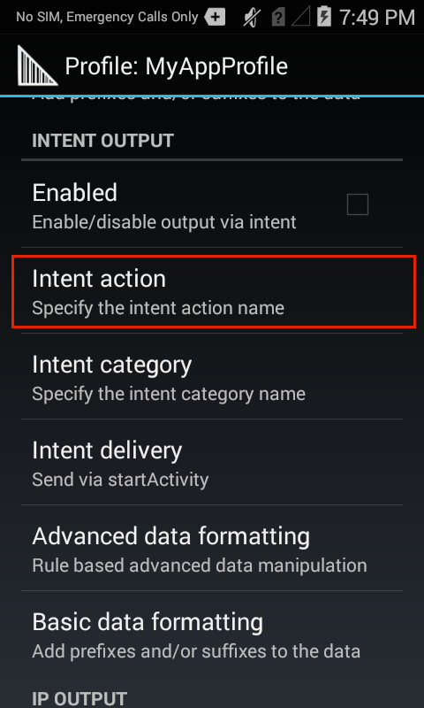
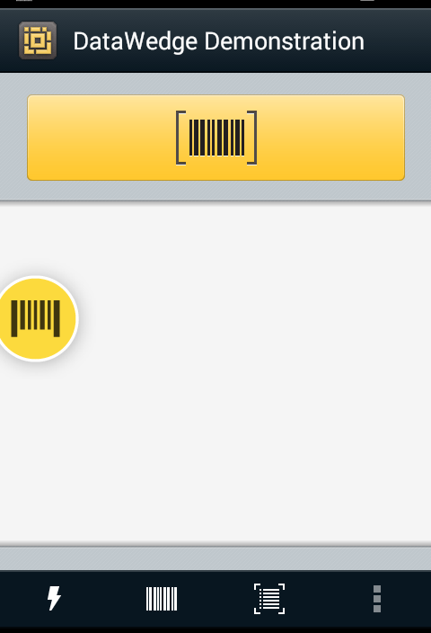

概要
出力プラグインでは、処理されたデータを関連付けられたアプリケーションまたはサーバーに送信します。DataWedge に付属する入力プラグインについては、この後で説明します。
キーストローク出力プラグインでは、処理されたデータを収集し、それを一連のキーストロークとして、関連付けられたアプリケーションに送信して、ユーザーがキーを押すアクションをエミュレートします。
インテント出力プラグインでは、処理されたデータを、関連付けられたフォアグラウンド アプリケーションに Android インテント内のペイロードとして送信します。
IP 出力プラグインでは、キャプチャしたデータを、TCP または UDP 転送プロトコルを使用して、Zebra IPWedge ソフトウェアを実行している Windows サーバーの指定した IP アドレスとポートに送信できます。詳細については、「IP 出力」ガイドを参照してください。
DataWedge 出力オプション:
- インテント (プログラムによるデータのハンドオフ)
- インターネット プロトコル (PC またはサーバーに TCP または UDP 経由)
- キーストローク (キーボード エミュレーション)
「自動」オプションを選択すると、以下のルールに基づいて、使用可能なデバイスのリストから最適なスキャン デバイスが自動的に決定されます。
自動スキャナ選択ルール:
- Zebra スキャン モジュールまたはスキャン/MSR モジュールがインストールされている場合は、2D イメージャが選択されます。
- スキャン モジュールがインストールされていない場合は、カメラが選択されます。
- カメラを選択すると、背面カメラを使用してスキャンが実行されます。
- 2D イメージャを選択すると、インストールしたスキャンまたはスキャン/MSR モジュールを使用してスキャンが実行されます。
Bluetooth スキャナ
DataWedge では、次の Zebra Bluetooth スキャナをサポートします。
- RS507 コードレス リング スキャナ
- RS6000 リング スキャナ
- DS3678 超高耐久性スキャナ
Bluetooth スキャナは、次のルールに従ってサポートされます。
- プロファイルで RS507 を初期構成するには、スキャナをペアリングして接続する必要があります。
- 初期構成後、Bluetooth スキャナをデバイスから切断しても、プロファイルで有効/無効にすることができます。ただし、リーダー パラメータ、デコーダ、およびその他のスキャナの設定を構成するには、Bluetooth スキャナを接続する必要があります。
- 自動選択された別のスキャナの使用中に、Bluetooth スキャナを接続しても、Bluetooth スキャナが自動的に再接続されることはありません。Bluetooth スキャナを再度有効にするには、そのスキャナを接続してプロファイルでそれを選択するか、自動選択オプションを再度選択します。
- 自動選択とバッテリ交換 - バッテリ交換の前にスキャナ選択が「自動」に設定されており、RS507 が有効になっている場合は、バッテリ交換後に再接続すると、その RS507 スキャナでの作業が続行されます。交換後に RS507 を再接続しない場合は、その時点のデフォルト スキャナに戻ります。
- サスペンド時に有効状態を維持 - このモードは、Bluetooth およびプラグ接続可能なスキャナでサポートされており、サスペンド モード中よりもバッテリの消耗が早まる可能性があります。注: サポートされているスキャナのスキャン トリガを押すと、Zebra コンピューティング デバイスはサスペンド モードからウェイクします。
SimulScan 入力
SimulScan 入力プラグインを使用すると、マルチパート フォーム上のバーコード、画像、テキスト、署名、電話番号、およびその他のデータを同時にキャプチャできます。SimulScan 入力プラグインは、この機能を DataWedge に追加します。指定した SimulScan テンプレートに従ってフォームデータをキャプチャすると、プロセス プラグインを使用して、必要に応じてデータを処理または形式化できます。
 SimulScan 入力プラグイン オプション。
SimulScan 入力プラグイン オプション。
SimulScan キャプチャに関する注記:
- SimulScan でキャプチャしたテキストは 1 つの文字列に連結され、その文字列に対して処理が実行されます。
- プロファイルでバーコード入力プラグインが有効になっている場合、そのプロファイルで SimulScan を有効にすると、バーコード入力プラグインが無効になります。
デバイスの選択 - デバイスのカメラか、システムで設定されたデフォルトのスキャン デバイスを選択できます。
テンプレートの選択 - 構成するプロファイルの SimulScan テンプレートを設定します。
DataWedge に付属するテンプレートは、以下のとおりです。
BankCheck.xml - 小切手の機械可読領域 (MRZ) から口座番号と銀行コードをキャプチャします。
Barcode1.xml - 任意のシンボル体系の 1 個のバーコードをデコードします。
Barcode2.xml - 同じまたは異なるシンボル体系の 2 個のバーコードをデコードします。
Barcode4.xml - 同じまたは異なるシンボル体系の 4 個のバーコードをデコードします。
Barcode5.xml - 同じまたは異なるシンボル体系の 5 個のバーコードをデコードします。
Barcode10.xml - 同じまたは異なるシンボル体系の 10 個のバーコードをデコードします。
BookNumber.xml - 10 桁または 13 桁の ISBN コードをデコードします。
DocCap+Optional-Barcode.xml - フォームを画像としてキャプチャし、バーコードがある場合は、それを必要に応じてデコードします。何も選択されていない場合、これがデフォルトのフォームです。
DocCap+Required-Barcode.xml - フォームをキャプチャし、使用可能なバーコードをデコードします。
TravelDoc.xml - パスポートなどの渡航文書の機械可読領域 (MRZ) から情報をキャプチャします。
Unstructured Multi-Line.xml - OCR で複数行の英数字テキストを取得します。
Unstructured Single Line.xml - OCR で 1 行の英数字テキストを取得します。
SimulScan に付属するすべてのテンプレートの名前には、先頭に「Default」という単語とハイフンが付いています。
次のデバイス ディレクトリにコピーされたカスタム テンプレート XML ファイルは、このオプションを使用して選択できます。
/enterprise/device/settings/datawedge/templates
注: /enterprise ディレクトリ内のファイルとフォルダは、デフォルトでは Android ファイル ブラウザに表示されません。これらを表示させるには、パスを手動で入力します。
パートナおよびその他の承認されたユーザーは、Zebra の SimulScan テンプレート ビルダを使用して、オンラインでカスタム テンプレートを作成できます。
領域セパレータ - SimulScan テキスト領域データのセパレータ文字を構成するのに使用します。複数のテキスト領域が存在する場合は、領域セパレータが、取得フォームの各領域のデータ文字列の間に挿入されます。領域セパレータは、キーストローク プラグインのアクション キー文字の設定 (以下を参照) と併用して、SimulScan 領域データを個別のテキスト フィールドにディスパッチできます。
指定可能な値:
- なし (デフォルト)
- タブ
- ライン フィード
- キャリッジ リターン
注:
- バーコード、OCR、OMR の各領域は、テキスト領域と見なされます。キーストローク出力と IP 出力を使用すると、テキスト領域データのみがフォアグラウンド アプリケーションまたはリモート サーバーにディスパッチされます。
- ピクチャ領域データは、インテント出力プラグインを介してのみ取得できます。
キーストローク出力
キーストローク出力プラグインでは、処理されたデータを収集し、それを一連のキーストロークとして、関連付けられたアプリケーションに送信して、ユーザーがキーを押すアクションをエミュレートします。
キーストローク出力プラグインのオプション。
アクション キー文字 - バーコードまたは MSR データに埋め込まれた特殊文字の挿入を有効にします。
指定可能な値:
- なし - アクション キーを挿入しません
- タブ - ASCII タブ (0x09) 文字の代わりにアクション キーを挿入します
- ライン フィード - ASCII LF (0x0A) 文字の代わりにアクション キーを挿入します
- キャリッジ リターン - ASCII CR (0x0D) 文字の代わりにアクション キーを挿入します
マルチバイト文字の遅れ - マルチバイト文字を送信するための文字間の遅れ (ミリ秒) を設定するのに使用します。このパラメータは、Unicode 文字とマルチバイト文字を Android ブラウザに送信する際に発生する問題を回避するのに役立ちます。デフォルトでは、値はゼロに設定されています。キーストロークの配信でエラーが発生した場合は、遅延値を 100ms 単位で増やします。
キー イベントの遅れ - 制御文字を、フォアグラウンド アプリケーションにキーストロークとしてディスパッチするための遅延 (ミリ秒) を設定するのに使用します。
基本データ形式
基本データ形式処理プラグインにより、取得したデータを出力プラグインに渡す前に、データの先頭または末尾にカスタム値またはキーストロークを簡単に追加できます。また、データを 16 進形式に変換することもできます。基本データ形式処理プラグインが有効になっていない場合、キャプチャしたデータは、選択した出力プラグインに変更なしで渡されます。
 基本データ形式出力プラグインのオプション。
基本データ形式出力プラグインのオプション。
データ接頭部 - 送信する前に、取得したデータの先頭に指定した文字を追加します。
データ接尾部 - 送信する前に、取得したデータの末尾に指定した文字を追加します。
データ送信 - デフォルトで有効になっています。このため、関連付けられたアプリケーションがフォアグラウンドになったときに、キャプチャしたデータをそのアプリケーションに転送できます。注: このオプションを無効にすると、キャプチャしたデータのみが転送されなくなります。このオプションが無効になっている場合でも、接頭部や接尾部の文字列は、関連付けられたアプリケーションに渡されます。
16 進として送信 - データを 16 進形式で送信します。たとえば、取得したバーコード データが 012345 の場合は、同等の 16 進数 303132333435 が送信されます。
Tab キー送信 - 処理されたデータの末尾に TAB 文字を追加します。
Enter キー送信 - 処理されたデータの末尾に Enter 文字を追加します。
高度なデータ形式
高度なデータ形式処理プラグインを使用すると、取得したデータを、個別または複数の基準とアクションを含む一連の複雑なルールに基づいて、要件に合わせてカスタマイズできます。詳細については、『Advanced Data Formatting Guide』を参照してください。
インテント出力
インテント出力プラグインにより、Android インテント メカニズムを使用して、取得したデータをプログラムでアプリケーションに渡すことができます。アプリケーションのコア コンポーネント (アクティビティ、サービス、およびブロードキャスト レシーバ) は、インテントによってアクティブ化されます。インテント オブジェクトは、目的のアクションを記述する情報のバンドルです。これには、処理対象のデータ、アクションを実行する必要のあるコンポーネントのカテゴリ、およびその他の関連する指示が含まれます。インテントが開始されると、Android でインテントに応答する適切なコンポーネントが検出され、必要に応じてコンポーネントの新しいインスタンスが起動されて、それにインテント オブジェクトが渡されます。
コンポーネントでは、インテント フィルタを通じて処理できるインテントの種類をアドバタイズします。これは、AndroidManifest.xml ファイルで <intent-filter> 要素として指定します。コンポーネントには、それぞれが異なる機能を記述する任意の数のインテント フィルタを含めることができます。
 インテント出力プラグインのオプション。
DataWedge では、AndroidManifest.xml ファイルの記述に従って、[インテント カテゴリ] の [インテント アクション] を通じてインテントを呼び出します。たとえば、DataWedge マニフェストに以下の行が含まれているとします。
<intent-filter>
...
<action android:name="com.myapp.action" />
<category android:name="android.intent.category.DEFAULT" />
...
</intent-filter>
この場合、インテント出力プラグインのインテント アクションは com.myapp.action で、インテント カテゴリは android.intent.category.DEFAULT になります。
[インテント配信] オプションでは、インテントを配信する方法を指定できます。インテント ベースのデータは、次の 3 つの配信メカニズムのいずれかによって配信されます。
startActivity で送信
startService で送信
ブロードキャスト インテント
インテント配信がブロードキャスト インテントを介して送信される場合は、ブロードキャスト インテントにレシーバ フォアグラウンド フラグ Intent.FLAG_RECEIVER_FOREGROUND が設定され、ブロードキャスト受信側に、より短いタイムアウト間隔でフォアグラウンド優先度で実行する許可が与えられます。このフラグは、[インテント配信] が [ブロードキャスト インテント] に設定されている場合にのみ設定されます。注: このフラグは、デバイスのブートアップ直後にインテントの配信で遅延が発生した場合にのみ使用してください。
デコード関連データ
インテント バンドルに追加されたデコード関連データは、次の呼び出しを使用して取得できます。
Intent.getStringtExtra()
上記の呼び出しは、以下の文字列タグとともに使用できます。
String LABEL_TYPE_TAG = "com.symbol.datawedge.label_type"。文字列にバーコードラベル タイプが含まれます
String DATA_STRING_TAG = "com.symbol.datawedge.data_string"。文字列に出力データが文字列として含まれます。連結されたバーコードの場合、デコード データは連結され、1 つの文字列として送信されます。
String DECODE_DATA_TAG = "com.symbol.datawedge.decode_data"。デコード データは、バイト配列のリストとして返されます。ほとんどの場合、デコードごとに 1 つのバイト配列があります。連結に対応するバーコード シンボル体系 (Codabar、Code128、MicroPDF など) の場合、デコードされたデータは、複数のバイト配列 (バーコードごとに 1 つのバイト配列) に格納されます。クライアントは、インデックスを渡すことによって各バイト配列のデータを取得できます。
MSR 関連データ
インテント バンドルに追加された MSR 関連データは、次の呼び出しを使用して取得できます。
Intent.getStringtExtra()
上記の呼び出しは、以下の文字列タグとともに使用できます。
String MSR_DATA_TAG = "com.symbol.datawedge.msr_data"。MSR トラックからのデータは連結され、バイト配列として送信されます。開始/終了符号およびトラック セパレータは、構成されたとおりに含まれます。
String MSR_TRACK1_TAG = "com.symbol.datawedge.msr_track1"。MSR トラック 1 のデータがバイト配列として返されます。
String MSR_TRACK2_TAG = "com.symbol.datawedge.msr_track2"。MSR トラック 2 のデータがバイト配列として返されます。
String MSR_TRACK3_TAG = "com.symbol.datawedge.msr_track3"。MSR トラック 3 のデータがバイト配列として返されます。
String MSR_TRACK1_STATUS_TAG = "com.symbol.datawedge.msr_track1_status"。MSR トラック 1 でステータスを整数としてデコードします。0 は、デコードが成功したことを示します。
String MSR_TRACK2_STATUS_TAG = "com.symbol.datawedge.msr_track2_status"。MSR トラック 2 でステータスを整数としてデコードします。0 は、デコードが成功したことを示します。
String MSR_TRACK3_STATUS_TAG = "com.symbol.datawedge.msr_track3_status"。MSR トラック 3 でステータスを整数としてデコードします。0 は、デコードが成功したことを示します。
SimulScan 関連データ
インテント バンドルに追加された SimulScan 関連データは、以下の呼び出しを使用して取得できます。
Intent.getStringtExtra()Intent. getParcelableArrayListExtra()Bundle.getInt()Bundle.getString()Bundle.getByteArray()
上記の呼び出しでは、以下の文字列タグを使用できます。
String SIMULSCAN_TEMPLATE_NAME_TAG = "com.symbol.datawedge.simulscan_template_name"。SimulScan でフォームをキャプチャするのに使用したテンプレートの名前。
String SIMULSCAN_REGIONS_BUNDLE_TAG= "com.symbol.datawedge.simulscan_region_data"。バンドルの配列を返します。各バンドルに領域とフォームに関するデータと情報が含まれます。
String SIMULSCAN_REGION_NAME_TAG = "com.symbol.datawedge.simulscan_region_name"。各領域のバンドル オブジェクトの領域名を返します。領域名を取得するには、
Bundle.getString()を呼び出す必要があります。String SIMULSCAN_REGION_ID_TAG = "com.symbol.datawedge.simulscan_region_id"。各領域のバンドル オブジェクトの領域 ID を返します。領域 ID は整数であり、
Bundle.getInt ()を呼び出すことで取得できます。String SIMULSCAN_REGION_STRING_DATA= "com.symbol.datawedge.simulscan_region_string_data"。領域の文字列データを返します。文字列データは、バーコード、OCR、OMR の各データとともに返されます。
String SIMULSCAN_REGION_BINARY_DATA= "com.symbol.datawedge.simulscan_region_string_data"。領域のデータをバイト配列の形式で返します。バイナリ データは、ピクチャ領域とフォーム画像でのみ得られます。ピクチャ データとフォーム データの両方をビットマップにロードして、アプリケーションで表示できます。
String SIMULSCAN_REGION_TYPE_TAG = "com.symbol.datawedge.simulscan_region_type"。各領域のバンドル オブジェクトの領域タイプを返します。領域タイプは文字列であり、
Bundle.getString ()を呼び出すことで取得できます。
領域タイプの戻り値は、以下のとおりです。
- Barcode - 領域はバーコード。
- OCR - 領域は、光学文字認識 (OCR) 領域 (名前、住所など)。
- OMR - 領域は、光学マーク認識 (OMR) 領域 (チェックボックス、ラジオ ボタンなど)。
- ピクチャ - 領域はピクチャです。データは JPEG 形式になります。
- Form - バンドルに、キャプチャしたフォームのピクチャが含まれることを指定するフォーム タイプフォーム画像は JPEG 形式になります。
重要: 一部のスキャン アプリケーションでは、デコードされたデータを現在のアクティビティに直接送信し、表示しないことが望ましい場合があります。このような場合、アクティビティは、その AndroidManifest.xml ファイルで「singleTop」として指定する必要があります。この方法でアクティビティを指定しないと、デコードのたびにアクティビティのインスタンスが起動され、新たに生成された各コピーにデータが送信されます。
Android インテントの詳細については、Android デベロッパ向けサイトを参照してください。
IP 出力
IP 出力プラグインにより、キャプチャしたデータを、Zebra 製のコンパクトな Windows アプリである IPWedge を実行しているコンピュータにネットワーク経由で転送できます。PC では、データをキーストロークとして受信するか、クリップボードで受信します。これにより、デバイスは PC のワイヤレス スキャナとして機能するようになります。
IP 出力プラグインを使用するようにデバイスを構成するには、PC の IP アドレスと PC がリッスンするポート番号がわかっている必要があります。まず PC をセットアップします。IPWedge のダウンロードおよびセットアップ手順については、「IPWedge」ガイドを参照してください。次に、ここから再開します。
IP 出力プラグインのセットアップ:
IP 出力プラグインをアクティブにするプロファイルで、以下の手順に従います。
1.プロファイルの [IP 出力] セクションに移動します。
2.[有効] および [リモート Wedge] ボックスをオンにして、IP 出力と IPWedge サーバー コンポーネントとの通信を有効にします。
 IP 出力プラグイン オプション。
IP 出力プラグイン オプション。
3.データ転送用のプロトコル (TCP または UDP) を選択するか、デフォルト (TCP) を受け入れます。
4.IPWedge ソフトウェアを実行しているサーバーの IP アドレスを入力します。
5.ポート番号がデフォルトの 58627 以外になっている場合は、ポート番号を入力します。
IPWedge なしでの IP 出力プラグインの使用
IP 出力プラグインを使用して、キャプチャしたデータを IPWedge なしでリモート デバイスに送信できます。データ受信側の PC またはモバイル デバイスには、IP 出力プラグインで構成されたポートと IP アドレスから送信される TCP または UDP データをリッスンするクライアント アプリケーションが必要です。キャプチャしたデータをリモート コンピュータまたはデバイスに送信するように IP 出力プラグインを構成するには、以下の手順に従います。
1.プロファイルの [IP 出力] セクションに移動します。
2.[有効] ボックスをオンにして、[リモート Wedge] ボックスをオフにします。
3.データ転送用のプロトコル (TCP または UDP) を選択するか、デフォルト (TCP) を受け入れます。
4.IPWedge ソフトウェアを実行しているサーバーの IP アドレスを入力します。
5.ポート番号がデフォルトの 58627 以外になっている場合は、ポート番号を入力します。
警告: Zebra では、このような使用方法はサポートしていません。
Data Capture Plus (DCP)
Data Capture Plus (以前の「データ キャプチャ パネル」) では、デバイスの画面の領域をスキャン トリガとして指定できます。指定した画面領域をタップすると、DataWedge は、スキャナ ボタンを押した場合や、その他のハードウェア トリガが発生した場合と同じように応答します。
DCP は、デフォルトで無効になっています。DataWedge プロファイル構成画面により、アプリ ユーザーは、特定のプロファイルがロードされた後に、画面上の DCP の外観を構成できます。DCP を有効にするオプションを選択した場合は、この後に示す 5 つのパラメータが優先選択画面に表示され、必要に応じて DCP を構成できます。
注: 現在のプロファイルでスキャナが無効になっている場合、DCP は表示されません。
 スキャン トリガを設定するための Data Capture Plus オプション。
スキャン トリガを設定するための Data Capture Plus オプション。
Data Capture Plus には、以下の構成可能なパラメータが用意されています。
ボタンをドッキング - フローティング DCP ボタンの初期ドッキング位置を設定します。実行時にユーザーが行った変更は、アクティブ プロファイルに保存されます。ドッキング オプション:
- 右のみ
- 左のみ
- 右または左
開始 - DCP の起動モードを設定します。ボタンとして起動するように構成されている場合、実行時にドラッグして DCP モードを変更できますが、プロファイルで起動状態は変更されません。開始オプション:
- ボタン モード (フローティング ボタン)
- 全画面モード
- ボタンのみモード
ボタン最高位置 - ボタンの位置の上限を設定します。画面の高さのパーセントで指定します。たとえば、縦 4 インチの画面で 75 (%) に設定すると、DCP ボタンの上端が画面上端から 1 インチ未満になることはありません。
ボタン最低位置 - ボタンの位置の下限を設定します。画面の高さのパーセントで指定します。たとえば、縦 4 インチの画面で 25 (%) に設定すると、DCP ボタンの下端が画面下端から 1 インチ未満になることはありません。
ドラッグ検出時間 - 画面をタップした後に DCP が待機する時間 (ミリ秒) であり、この時間の経過後にスキャナ アクションがトリガされます。これにより、DCP ボタンを新しい場所にドラッグするときに、誤ったトリガを防ぐことができます。
注: カメラをスキャナとして使用しているときに、DCP をすばやくタッチして離すと、ビュー ファインダが起動することがあります。終了するには、戻るボタンを押します。
 最小化モードで表示された Data Capture Plus。
注: ボタンとして起動するように構成されている場合、実行時にドラッグして DCP モードを変更できますが、プロファイルで起動状態は変更されません。ただし、実行時に行った、デバイスの画面の上下位置とドッキング側に対する変更は、アクティブ プロファイルに保存されます。
 最大化モードで表示された Data Capture Plus。
最大化モードで表示された Data Capture Plus。
DCP によるスキャン
DCP でバーコードをスキャンするには:
1.DCP が有効な状態で、DCP 用に指定された画面領域をタップして長押しします。タップして長押ししている間に、スキャン ビーム (またはカメラのビュー ファインダ) がアクティブになります。
2.スキャンするバーコードにスキャン ビームまたはカメラのレチクルの狙いを定めます。DCP では、現在のプロファイルのバーコード入力プラグインで構成した優先選択が使用されます。
3.* 指を離してスキャンを停止するか、カメラのビュー ファインダを閉じます。
注: カメラをスキャナとして使用しているときに、DCP コントロールをすばやくタッチして離すと、ビュー ファインダが起動することがあります。終了するには、戻るボタンを押します。
関連ガイド: